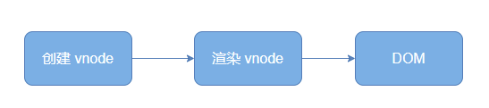
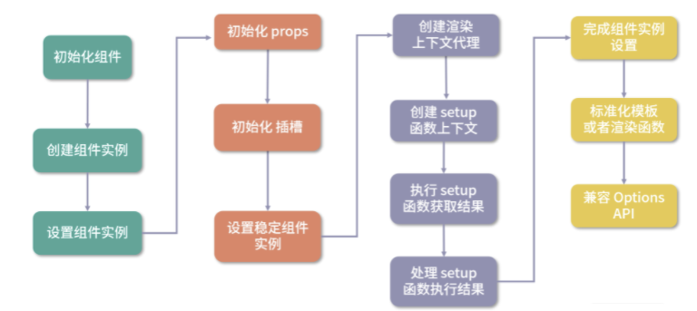

本节课的相关代码在源代码中的位置如下：
Vue.js 3.0 允许我们在编写组件的时候添加一个 setup 启动函数，它是 Composition API 逻辑组织的入口，本节课我们就来分析一下这个函数。
我们先通过一段代码认识它，在这里编写一个 button 组件：
1 2 3 4 5 6 7 8 9 10 11 12 13 14 15 16 17 18 19 20 21 22 23 <template > <button @click ="increment" > Count is: {{ state.count }}, double is: {{ state.double }} </button > </template > <script > import { reactive, computed } from 'vue' export default { setup ( const state = reactive({ count: 0, double: computed(() => state.count * 2 ) }) function increment ( state.count++ } return { state, increment } } } </script >
在 setup 函数内部，定义了一个响应式对象 state，它是通过 reactive API 创建的。state 对象有 count 和 double 两个属性，其中 count 对应一个数字属性的值；而double 通过 computed API 创建，对应一个计算属性的值。
模板中引用到的变量 state 和 increment 包含在 setup 函数的返回对象中，那么它们是如何建立联系的呢？
Vue.js 2.x 编写组件的时候，会在 props、data、methods、computed 等 options 中定义一些变量。在组件初始化阶段，Vue.js 内部会处理这些 options，即把定义的变量添加到了组件实例上。等模板编译成 render 函数的时候，内部通过 with(this){} 的语法去访问在组件实例中的变量。
创建和设置组件实例
我们来回顾一下组件的渲染流程：创建 vnode 、渲染 vnode 和生成 DOM。

其中渲染 vnode 的过程主要就是在挂载组件：
1 2 3 4 5 6 7 8 const mountComponent = (initialVNode, container, anchor, parentComponent, parentSuspense, isSVG, optimized ) => { const instance = (initialVNode.component = createComponentInstance(initialVNode, parentComponent, parentSuspense)) setupComponent(instance) setupRenderEffect(instance, initialVNode, container, anchor, parentSuspense, isSVG, optimized) }
可以看到，这段挂载组件的代码主要做了三件事情：创建组件实例、设置组件实例和设置并运行带副作用的渲染函数。今天重点分析前俩个流程。
源码地址 https://github.com/vuejs/vue-next/blob/master/packages/runtime-core/src/component.ts
创建组件流程
1 2 3 4 5 6 7 8 9 10 11 12 13 14 15 16 17 18 19 20 21 22 23 24 25 26 27 28 29 30 31 32 33 34 35 36 37 38 39 40 41 42 43 44 45 46 47 48 49 50 51 52 53 54 55 56 57 58 59 60 61 62 63 64 65 66 67 68 69 70 71 72 73 74 75 76 77 78 79 80 81 82 83 84 85 86 87 88 89 90 91 92 93 94 95 96 97 98 99 100 101 102 103 104 105 function createComponentInstance (vnode, parent, suspense ) const appContext = (parent ? parent.appContext : vnode.appContext) || emptyAppContext; const instance = { uid: uid++, vnode, parent, appContext, type : vnode.type, root: null , next: null , subTree: null , update: null , render: null , proxy: null , withProxy: null , effects: null , provides: parent ? parent.provides : Object .create(appContext.provides), accessCache: null , renderCache: [], ctx: EMPTY_OBJ, data: EMPTY_OBJ, props: EMPTY_OBJ, attrs: EMPTY_OBJ, slots: EMPTY_OBJ, refs: EMPTY_OBJ, setupState: EMPTY_OBJ, setupContext: null , components: Object .create(appContext.components), directives: Object .create(appContext.directives), suspense, asyncDep: null , asyncResolved: false , isMounted: false , isUnmounted: false , isDeactivated: false , bc: null , c: null , bm: null , m: null , bu: null , u: null , um: null , bum: null , da: null , a: null , rtg: null , rtc: null , ec: null , emit: null } instance.ctx = { _ : instance } instance.root = parent ? parent.root : instance instance.emit = emit.bind(null , instance) return instance }
从上述代码中可以看到，组件实例 instance 上定义了很多属性，你千万不要被这茫茫多的属性吓到，因为其中一些属性是为了实现某个场景或者某个功能所定义的，你只需要通过我在代码中的注释大概知道它们是做什么的即可。
Vue.js 2.x 使用 new Vue 来初始化一个组件的实例，到了 Vue.js 3.0，我们直接通过创建对象去创建组件的实例。这两种方式并无本质的区别，都是引用一个对象，在整个组件的生命周期中去维护组件的状态数据和上下文环境。
创建好 instance 实例后，接下来就是设置它的一些属性。目前已完成了组件的上下文、根组件指针以及派发事件方法的设置。我们在后面会继续分析更多 instance 实例属性的设置逻辑。
接着是组件实例的设置流程，对 setup 函数的处理就在这里完成，我们来看一下 setupComponent 方法的实现：
设置组件实例
1 2 3 4 5 6 7 8 9 10 11 12 13 14 function setupComponent (instance, isSSR = false ) const { props, children, shapeFlag } = instance.vnode const isStateful = shapeFlag & 4 initProps(instance, props, isStateful, isSSR) initSlots(instance, children) const setupResult = isStateful ? setupStatefulComponent(instance, isSSR) : undefined return setupResult }
可以看到，我们从组件 vnode 中获取了 props、children、shapeFlag 等属性，然后分别对 props 和插槽进行初始化，这两部分逻辑在后续的章节再详细分析。根据 shapeFlag 的值，我们可以判断这是不是一个有状态组件，如果是则要进一步去设置有状态组件的实例。
接下来我们要关注到 setupStatefulComponent 函数，它主要做了三件事：创建渲染上下文代理、判断处理 setup 函数和完成组件实例设置。它代码如下所示：
1 2 3 4 5 6 7 8 9 10 11 12 13 14 15 16 17 18 19 20 21 22 function setupStatefulComponent (instance, isSSR ) const Component = instance.type instance.accessCache = {} instance.proxy = new Proxy (instance.ctx, PublicInstanceProxyHandlers) const { setup } = Component if (setup) { const setupContext = (instance.setupContext = setup.length > 1 ? createSetupContext(instance) : null ) const setupResult = callWithErrorHandling(setup, instance, 0 , [instance.props, setupContext]) handleSetupResult(instance, setupResult) } else { finishComponentSetup(instance) } }
创建渲染上下文代理
首先是创建渲染上下文代理的流程，它主要对 instance.ctx 做了代理。在分析实现前，我们需要思考一个问题，这里为什么需要代理呢？
其实在 Vue.js 2.x 中，也有类似的数据代理逻辑，比如 props 求值后的数据，实际上存储在 this._props 上，而 data 中定义的数据存储在 this._data 上。举个例子：
1 2 3 4 5 6 7 8 9 10 <template> <p>{{ msg }}</p> </template> <script> export default { data ( msg: 1 } } </script>
在初始化组件的时候，data 中定义的 msg 在组件内部是存储在 this._data 上的，而模板渲染的时候访问 this.msg，实际上访问的是 this._data.msg，这是因为 Vue.js 2.x 在初始化 data 的时候，做了一层 proxy 代理。
到了 Vue.js 3.0，为了方便维护，我们把组件中不同状态的数据存储到不同的属性中，比如存储到 setupState、ctx、data、props 中。我们在执行组件渲染函数的时候，为了方便用户使用，会直接访问渲染上下文 instance.ctx 中的属性，所以我们也要做一层 proxy，对渲染上下文 instance.ctx 属性的访问和修改，代理到对 setupState、ctx、data、props 中的数据的访问和修改。
明确了代理的需求后，我们接下来就要分析 proxy 的几个方法： get、set 和 has。
get
当我们访问 instance.ctx 渲染上下文中的属性时，就会进入 get 函数。我们来看一下它的实现：
1 2 3 4 5 6 7 8 9 10 11 12 13 14 15 16 17 18 19 20 21 22 23 24 25 26 27 28 29 30 31 32 33 34 35 36 37 38 39 40 41 42 43 44 45 46 47 48 49 50 51 52 53 54 55 56 57 58 59 60 61 62 63 64 65 66 67 68 69 70 71 72 73 74 75 76 77 78 79 80 81 82 83 84 85 const PublicInstanceProxyHandlers = { get ({ _ : instance }, key) { const { ctx, setupState, data, props, accessCache, type , appContext } = instance if (key[0 ] !== '$' ) { const n = accessCache[key] if (n !== undefined ) { switch (n) { case 0 : return setupState[key] case 1 : return data[key] case 3 : return ctx[key] case 2 : return props[key] } } else if (setupState !== EMPTY_OBJ && hasOwn(setupState, key)) { accessCache[key] = 0 return setupState[key] } else if (data !== EMPTY_OBJ && hasOwn(data, key)) { accessCache[key] = 1 return data[key] } else if ( type .props && hasOwn(normalizePropsOptions(type .props)[0 ], key)) { accessCache[key] = 2 return props[key] } else if (ctx !== EMPTY_OBJ && hasOwn(ctx, key)) { accessCache[key] = 3 return ctx[key] } else { accessCache[key] = 4 } } const publicGetter = publicPropertiesMap[key] let cssModule, globalProperties if (publicGetter) { return publicGetter(instance) } else if ( (cssModule = type .__cssModules) && (cssModule = cssModule[key])) { return cssModule } else if (ctx !== EMPTY_OBJ && hasOwn(ctx, key)) { accessCache[key] = 3 return ctx[key] } else if ( ((globalProperties = appContext.config.globalProperties), hasOwn(globalProperties, key))) { return globalProperties[key] } else if ((process.env.NODE_ENV !== 'production' ) && currentRenderingInstance && key.indexOf('__v' ) !== 0 ) { if (data !== EMPTY_OBJ && key[0 ] === '$' && hasOwn(data, key)) { warn(`Property ${JSON .stringify(key)} must be accessed via $data because it starts with a reserved ` + `character and is not proxied on the render context.` ) } else { warn(`Property ${JSON .stringify(key)} was accessed during render ` + `but is not defined on instance.` ) } } } }
可以看到，函数首先判断 key 不以 $ 开头的情况，这部分数据可能是 setupState、data、props、ctx 中的一种，其中 data、props 我们已经很熟悉了；setupState 就是 setup 函数返回的数据，稍后我们会详细说；ctx 包括了计算属性、组件方法和用户自定义的一些数据。
如果 key 不以 $ 开头，那么就依次判断 setupState、data、props、ctx 中是否包含这个 key，如果包含就返回对应值。注意这个判断顺序很重要，在 key 相同时它会决定数据获取的优先级，举个例子：
1 2 3 4 5 6 7 8 9 10 11 12 13 14 15 16 17 18 19 <template> <p>{{msg}}</p> </template> <script> import { ref } from 'vue' export default { data ( return { msg: 'msg from data' } }, setup ( const msg = ref('msg from setup' ) return { msg } } } </script>
可以看到，函数首先判断 key 不以 $ 开头的情况，这部分数据可能是 setupState、data、props、ctx 中的一种，其中 data、props 我们已经很熟悉了；setupState 就是 setup 函数返回的数据，稍后我们会详细说；ctx 包括了计算属性、组件方法和用户自定义的一些数据。
果 key 不以 $ 开头，那么就依次判断 setupState、data、props、ctx 中是否包含这个 key，如果包含就返回对应值。注意这个判断顺序很重要，在 key 相同时它会决定数据获取的优先级 ，举个例子：
1 2 3 4 5 6 7 8 9 10 11 12 13 14 15 16 17 18 19 <template> <p>{{msg}}</p> </template> <script> import { ref } from 'vue' export default { data() { return { msg: 'msg from data' } }, setup() { const msg = ref('msg from setup') return { msg } } } </script>
我们在 data 和 setup 中都定义了 msg 变量，但最终输出到界面上的是"msg from setup"，这是因为 setupState 的判断优先级要高于 data。
再回到 get 函数中，我们可以看到这里定义了 accessCache 作为渲染代理的属性访问缓存，它具体是干什么的呢？组件在渲染时会经常访问数据进而触发 get 函数，这其中最昂贵的部分就是多次调用 hasOwn 去判断 key 在不在某个类型的数据中，但是在普通对象上执行简单的属性访问相对要快得多。所以在第一次获取 key 对应的数据后，我们利用 accessCache[key] 去缓存数据，下一次再次根据 key 查找数据，我们就可以直接通过 accessCache[key] 获取对应的值，就不需要依次调用 hasOwn 去判断了。这也是一个性能优化的小技巧。
如果 key 以$开头，那么接下来又会有一系列的判断，首先判断是不是 Vue.js 内部公开的 $xxx 属性或方法（比如 $parent）；然后判断是不是 vue-loader 编译注入的 css 模块内部的 key；接着判断是不是用户自定义以 $ 开头的 key；最后判断是不是全局属性。如果都不满足，就剩两种情况了，即在非生产环境下就会报两种类型的警告，第一种是在 data 中定义的数据以 $ 开头的警告，因为 $ 是保留字符，不会做代理；第二种是在模板中使用的变量没有定义的警告。
接下来是 set 代理过程，当我们修改 instance.ctx 渲染上下文中的属性的时候，就会进入 set 函数。我们来看一下 set 函数的实现：
set
1 2 3 4 5 6 7 8 9 10 11 12 13 14 15 16 17 18 19 20 21 22 23 24 25 26 27 28 29 30 31 const PublicInstanceProxyHandlers = { set ({ _ : instance }, key, value) { const { data, setupState, ctx } = instance if (setupState !== EMPTY_OBJ && hasOwn(setupState, key)) { setupState[key] = value } else if (data !== EMPTY_OBJ && hasOwn(data, key)) { data[key] = value } else if (key in instance.props) { (process.env.NODE_ENV !== 'production' ) && warn(`Attempting to mutate prop "${key} ". Props are readonly.` , instance) return false } if (key[0 ] === '$' && key.slice(1 ) in instance) { (process.env.NODE_ENV !== 'production' ) && warn(`Attempting to mutate public property "${key} ". ` + `Properties starting with $ are reserved and readonly.` , instance) return false } else { ctx[key] = value } return true } }
结合代码来看，函数主要做的事情就是对渲染上下文 instance.ctx 中的属性赋值，它实际上是代理到对应的数据类型中去完成赋值操作的。这里仍然要注意顺序问题，和 get 一样，优先判断 setupState，然后是 data，接着是 props 。
我们对之前的例子做点修改，添加一个方法：
1 2 3 4 5 6 7 8 9 10 11 12 13 14 15 16 17 18 19 20 21 22 23 24 25 <template> <p>{{ msg }}</p> <button @click="random">Random msg</button> </template> <script> import { ref } from 'vue' export default { data() { return { msg: 'msg from data' } }, setup() { const msg = ref('msg from setup') return { msg } }, methods: { random() { this.msg = Math.random() } } } </script>
我们点击按钮会执行 random 函数，这里的 this 指向的就是 instance.ctx，我们修改 this.msg 会触发 set 函数，所以最终修改的是 setupState 中的 msg 对应的值。
注意，如果我们直接对 props 中的数据赋值，在非生产环境中会收到一条警告，这是因为直接修改 props 不符合数据单向流动的设计思想；如果对 Vue.js 内部以 $ 开头的保留属性赋值，同样也会收到一条警告。
如果是用户自定义的数据，比如在 created 生命周期内定义的数据，它仅用于组件上下文的共享，如下所示：
1 2 3 4 5 export default { created ( this .userMsg = 'msg from user' } }
当执行 this.userMsg 赋值的时候，会触发 set 函数，最终 userMsg 会被保留到 ctx 中。
最后是 has 代理过程，当我们判断属性是否存在于 instance.ctx 渲染上下文中时，就会进入 has 函数，这个在平时项目中用的比较少，同样来举个例子，当执行 created 钩子函数中的 ‘msg’ in this 时，就会触发 has 函数。
1 2 3 4 5 export default { created () { console .log('msg' in this ) } }
下面我们来看一下 has 函数的实现：
1 2 3 4 5 6 7 8 9 10 11 12 13 const PublicInstanceProxyHandlers = { has ({ _ : { data, setupState, accessCache, ctx, type , appContext } }, key) { return (accessCache[key] !== undefined || (data !== EMPTY_OBJ && hasOwn(data, key)) || (setupState !== EMPTY_OBJ && hasOwn(setupState, key)) || (type .props && hasOwn(normalizePropsOptions(type .props)[0 ], key)) || hasOwn(ctx, key) || hasOwn(publicPropertiesMap, key) || hasOwn(appContext.config.globalProperties, key)) } }
这个函数的实现很简单，依次判断 key 是否存在于 accessCache、data、setupState、props 、用户数据、公开属性以及全局属性中，然后返回结果。
至此，我们就搞清楚了创建上下文代理的过程，让我们回到 setupStatefulComponent 函数中，接下来分析第二个流程——判断处理 setup 函数。
判断处理 setup 函数
我们看一下整个逻辑涉及的代码：
1 2 3 4 5 6 7 8 9 10 11 const { setup } = Componentif (setup) { const setupContext = (instance.setupContext = setup.length > 1 ? createSetupContext(instance) : null ) const setupResult = callWithErrorHandling(setup, instance, 0 , [instance.props, setupContext]) handleSetupResult(instance, setupResult) }
如果我们在组件中定义了 setup 函数，接下来就是处理 setup 函数的流程，主要是三个步骤：创建 setup 函数上下文、执行 setup 函数并获取结果和处理 setup 函数的执行结果。接下来我们就逐个来分析。
首先判断 setup 函数的参数长度，如果大于 1，则创建 setupContext 上下文。
1 2 const setupContext = (instance.setupContext = setup.length > 1 ? createSetupContext(instance) : null )
示例，我们有个 HelloWorld 子组件：
1 2 3 4 5 6 7 8 9 10 11 12 13 14 15 16 17 18 19 <template> <p>{{ msg }}</p> <button @click="onClick">Toggle</button> </template> <script> export default { props: { msg: String }, setup (props, { emit }) { function onClick () { emit('toggle') } return { onClick } } } </script>
我们在父组件引用这个组件：
1 2 3 4 5 6 7 8 9 10 11 12 13 14 15 16 17 18 19 20 <template> <HelloWorld @toggle="toggle" :msg="msg"></HelloWorld> </template> <script> import { ref } from 'vue' import HelloWorld from "./components/HelloWorld"; export default { components: { HelloWorld }, setup () { const msg = ref('Hello World') function toggle () { msg.value = msg.value === 'Hello World' ? 'Hello Vue' : 'Hello World' } return { toggle, msg } } } </script>
可以看到，HelloWorld 子组件的 setup 函数接收两个参数，第一个参数 props 对应父组件传入的 props 数据，第二个参数 emit 是一个对象，实际上就是 setupContext。
下面我们来看一下用 createSetupContext 函数来创建 setupContext：
1 2 3 4 5 6 7 function createSetupContext (instance ) return { attrs: instance.attrs, slots: instance.slots, emit: instance.emit } }
这里返回了一个对象，包括 attrs、slots 和 emit 三个属性。setupContext 让我们在 setup 函数内部可以获取到组件的属性、插槽以及派发事件的方法 emit。
可以预见的是，这个 setupContext 对应的就是 setup 函数第二个参数，我们接下来看一下 setup 函数具体是如何执行的。
我们通过下面这行代码来执行 setup 函数并获取结果 ：
1 const setupResult = callWithErrorHandling(setup, instance, 0 , [instance.props, setupContext])
我们具体来看一下 callWithErrorHandling 函数的实现：
1 2 3 4 5 6 7 8 9 10 function callWithErrorHandling (fn, instance, type , args ) let res try { res = args ? fn(...args) : fn() } catch (err) { handleError(err, instance, type ) } return res }
可以看到，它其实就是对 fn 做的一层包装，内部还是执行了 fn，并在有参数的时候传入参数，所以 setup 的第一个参数是 instance.props，第二个参数是 setupContext。函数执行过程中如果有 JavaScript 执行错误就会捕获错误，并执行 handleError 函数来处理。
执行 setup 函数并拿到了返回的结果，那么接下来就要用 handleSetupResult 函数来处理结果 。
1 handleSetupResult(instance, setupResult)
我们详细看一下 handleSetupResult 函数的实现：
1 2 3 4 5 6 7 8 9 10 11 function handleSetupResult (instance, setupResult ) if (isFunction(setupResult)) { instance.render = setupResult } else if (isObject(setupResult)) { instance.setupState = reactive(setupResult) } finishComponentSetup(instance) }
可以看到，当 setupResult 是一个对象的时候，我们把它变成了响应式并赋值给 instance.setupState，这样在模板渲染的时候，依据前面的代理规则，instance.ctx 就可以从 instance.setupState 上获取到对应的数据，这就在 setup 函数与模板渲染间建立了联系。
另外 setup 不仅仅支持返回一个对象，也可以返回一个函数作为组件的渲染函数。我们可以改写前面的示例，来看一下这时的情况：
1 2 3 4 5 6 7 8 9 10 11 12 13 14 15 16 17 18 19 <script> import { h } from 'vue' export default { props: { msg: String }, setup (props, { emit }) { function onClick () { emit('toggle') } return (ctx) => { return [ h('p', null, ctx.msg), h('button', { onClick: onClick }, 'Toggle') ] } } } </script>
这里，我们删除了 HelloWorld 子组件的 template 部分，并把 setup 函数的返回结果改成了函数，也就是说它会作为组件的渲染函数，一切运行正常。
在 handleSetupResult 的最后，会执行 finishComponentSetup 函数完成组件实例的设置，其实这个函数和 setup 函数的执行结果已经没什么关系了，提取到外面放在 handleSetupResult 函数后面执行更合理一些。
另外当组件没有定义的 setup 的时候，也会执行 finishComponentSetup 函数去完成组件实例的设置。
完成组件实例设置
接下来我们来看一下 finishComponentSetup 函数的实现：
1 2 3 4 5 6 7 8 9 10 11 12 13 14 15 16 17 18 19 20 21 22 23 24 25 26 27 28 29 30 31 32 33 34 35 36 37 38 function finishComponentSetup (instance ) const Component = instance.type if (!instance.render) { if (compile && Component.template && !Component.render) { Component.render = compile(Component.template, { isCustomElement: instance.appContext.config.isCustomElement || NO }) Component.render._rc = true } if ((process.env.NODE_ENV !== 'production' ) && !Component.render) { if (!compile && Component.template) { warn(`Component provided template option but ` + `runtime compilation is not supported in this build of Vue.` + (` Configure your bundler to alias "vue" to "vue/dist/vue.esm-bundler.js".` ) ) } else { warn(`Component is missing template or render function.` ) } } instance.render = (Component.render || NOOP) if (instance.render._rc) { instance.withProxy = new Proxy (instance.ctx, RuntimeCompiledPublicInstanceProxyHandlers) } } { currentInstance = instance applyOptions(instance, Component) currentInstance = null } }
函数主要做了两件事情：标准化模板或者渲染函数和兼容 Options API。接下来我们详细分析这两个流程。
标准化模板或者渲染函数
在分析这个过程之前，我们需要了解一些背景知识。组件最终通过运行 render 函数生成子树 vnode，但是我们很少直接去编写 render 函数，通常会使用两种方式开发组件。
第一种是使用 SFC（Single File Components）单文件的开发方式来开发组件 ，即通过编写组件的 template 模板去描述一个组件的 DOM 结构。我们知道 .vue 类型的文件无法在 Web 端直接加载，因此在 webpack 的编译阶段，它会通过 vue-loader 编译生成组件相关的 JavaScript 和 CSS，并把 template 部分转换成 render 函数添加到组件对象的属性中。
另外一种开发方式是不借助 webpack 编译 ，直接引入 Vue.js，开箱即用，我们直接在组件对象 template 属性中编写组件的模板，然后在运行阶段编译生成 render 函数，这种方式通常用于有一定历史包袱的古老项目。
因此 Vue.js 在 Web 端有两个版本：runtime-only 和 runtime-compiled。我们更推荐用 runtime-only 版本的 Vue.js，因为相对而言它体积更小，而且在运行时不用编译，不仅耗时更少而且性能更优秀。遇到一些不得已的情况比如上述提到的古老项目，我们也可以选择 runtime-compiled 版本。
runtime-only 和 runtime-compiled 的主要区别在于是否注册了这个 compile 方法。
在 Vue.js 3.0 中，compile 方法是通过外部注册的：
1 2 3 4 let compile;function registerRuntimeCompiler (_compile ) compile = _compile; }
回到标准化模板或者渲染函数逻辑，我们先看 instance.render 是否存在，如果不存在则开始标准化流程，这里主要需要处理以下三种情况。
compile 和组件 template 属性存在，render 方法不存在的情况。此时， runtime-compiled 版本会在 JavaScript 运行时进行模板编译，生成 render 函数。
compile 和 render 方法不存在，组件 template 属性存在的情况。此时由于没有 compile，这里用的是 runtime-only 的版本，因此要报一个警告来告诉用户，想要运行时编译得使用 runtime-compiled 版本的 Vue.js。
组件既没有写 render 函数，也没有写 template 模板，此时要报一个警告，告诉用户组件缺少了 render 函数或者 template 模板。
处理完以上情况后，就要把组件的 render 函数赋值给 instance.render。到了组件渲染的时候，就可以运行 instance.render 函数生成组件的子树 vnode 了。
另外对于使用 with 块运行时编译的渲染函数，渲染上下文的代理是 RuntimeCompiledPublicInstanceProxyHandlers，它是在之前渲染上下文代理 PublicInstanceProxyHandlers 的基础上进行的扩展，主要对 has 函数的实现做了优化：
1 2 3 4 5 6 7 8 9 10 11 12 13 14 15 16 17 const RuntimeCompiledPublicInstanceProxyHandlers = { ...PublicInstanceProxyHandlers, get (target, key ) if (key === Symbol .unscopables) { return } return PublicInstanceProxyHandlers.get(target, key, target) }, has (_, key ) const has = key[0 ] !== '_' && !isGloballyWhitelisted(key) if ((process.env.NODE_ENV !== 'production' ) && !has && PublicInstanceProxyHandlers.has(_, key)) { warn(`Property ${JSON .stringify(key)} should not start with _ which is a reserved prefix for Vue internals.` ) } return has } }
这里如果 key 以 _ 开头，或者 key 在全局变量的白名单内，则 has 为 false，此时则直接命中警告，不用再进行之前那一系列的判断了。
了解完标准化模板或者渲染函数流程，我们来看完成组件实例设置的最后一个流程——兼容 Vue.js 2.x 的 Options API。
Options API：兼容 Vue.js 2.x
我们知道 Vue.js 2.x 是通过组件对象的方式去描述一个组件，之前我们也说过，Vue.js 3.0 仍然支持 Vue.js 2.x Options API 的写法，这主要就是通过 applyOptions方法实现的。
1 2 3 4 5 6 7 8 9 10 11 12 13 14 15 16 17 18 19 20 21 22 23 24 25 26 27 28 29 function applyOptions (instance, options, deferredData = [], deferredWatch = [], asMixin = false ) const { mixins, extends : extendsOptions, props: propsOptions, data : dataOptions, computed : computedOptions, methods, watch : watchOptions, provide : provideOptions, inject : injectOptions, components, directives, beforeMount, mounted, beforeUpdate, updated, activated, deactivated, beforeUnmount, unmounted, renderTracked, renderTriggered, errorCaptured } = options; const publicThis = instance.proxy; const ctx = instance.ctx; }
由于 applyOptions 的代码特别长，所以这里我用注释列出了它主要做的事情，感兴趣的同学可以去翻阅它的源码。
总结
这节课我们主要分析了组件的初始化流程，主要包括创建组件实例和设置组件实例。通过进一步细节的深入，我们也了解了渲染上下文的代理过程；了解了 Composition API 中的 setup 启动函数执行的时机，以及如何建立 setup 返回结果和模板渲染之间的联系；了解了组件定义的模板或者渲染函数的标准化过程；了解了如何兼容 Vue.js 2.x 的 Options API。
我们通过一张图再直观感受一下 Vue.js 3.0 组件的初始化流程：

If you like this blog or find it useful for you, you are welcome to comment on it. You are also welcome to share this blog, so that more people can participate in it. If the images used in the blog infringe your copyright, please contact the author to delete them. Thank you !